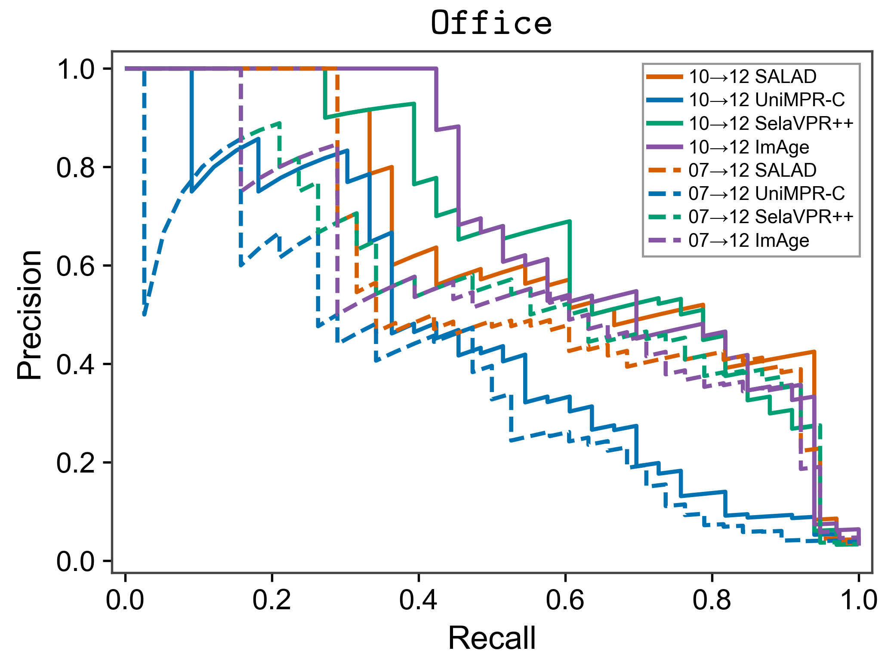
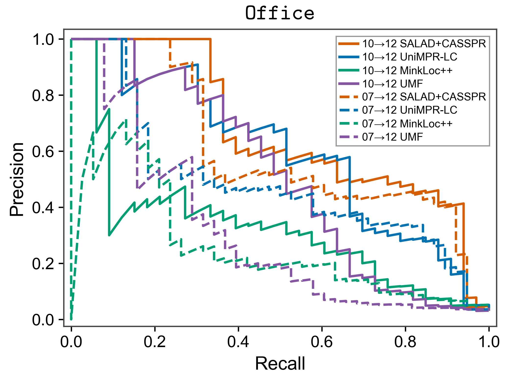
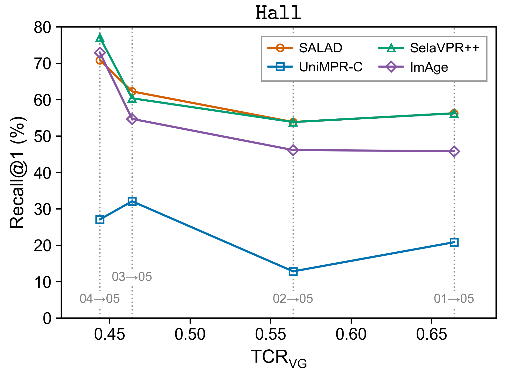
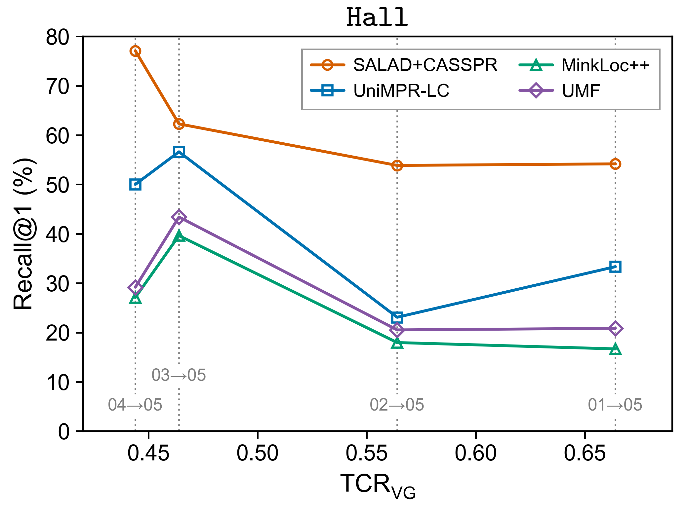

Place recognition under structural change
Benchmark
A common evaluation of LiDAR, visual, and multi-sensor fusion methods across evolving construction sites.
- Construction sites
- 3
- Baseline methods
- 12
- Database–query session pairs
- 19
Evaluation protocol
The latest session at each site is the query set. Each earlier session is evaluated as a separate database, using identical samples and ground-truth labels across methods.
Hall
01–04 → 05
4 session pairs · 1 m sampling
Office
01–11 → 12
11 session pairs · 5 m sampling
Quad
01–04 → 05
4 session pairs · 5 m sampling
- 01
Select keyframes
Sample by 3D displacement: 1 m in Hall and 5 m in Office and Quad.
- 02
Pair observations
Use a single LiDAR scan and the nearest RGB image within 100 ms.
- 03
Extract features
Use pretrained weights without fine-tuning on ConPR++.
- 04
Search the database
Retrieve from the entire sampled database for each session pair.
Sampling and common input preprocessing
Keyframes are greedily selected along the full trajectory using displacement from the last selected pose, then restricted to the construction region. Each session is sampled once and reused in its database or query role. No appearance or blur filtering is applied.
Inputs are individual LiDAR scans, without accumulation, deskewing, or gravity alignment. Common benchmark preprocessing removes non-finite coordinates and points below 0.3 m range, followed by each baseline's own preprocessing. These evaluation operations are separate from the released sensor-file format.
GT and IMU measurements are not used to correct the model's single-scan input. Labels use the scan-end GT LiDAR pose. The nominal FOV range used for labels is not a shared model-input range crop.
Baseline configurations
These methods differ in architecture and pretraining data. UniMPR's three modes use the same pretrained checkpoint with its official missing-modality handling.
| Method | Modality | Weights | Input | Retrieval |
|---|---|---|---|---|
| SOLiD | LiDAR | None | 3–80 m range; 1 m voxel | Cosine |
| UniMPR-L / C / LC | LiDAR / visual / fusion | Shared | Polar BEV 200 × 900; RGB 336 × 336 | Euclidean |
| CASSPR | LiDAR | USyd | 4,096 points; range <100 m | Euclidean |
| BEVPlace++ | LiDAR | KITTI | Density BEV 201 × 201; ±40 m XYZ crop | Euclidean |
| SALAD | Visual | GSV-Cities | RGB 322 × 322 | Cosine |
| SelaVPR++ | Visual | Unified | RGB 322 × 322 | Cosine |
| ImAge | Visual | Unified | RGB 322 × 322 | Cosine |
| SALAD+CASSPR | Fusion | Combined | SALAD and CASSPR inputs | Mean cosine |
| MinkLoc++ | Fusion | Oxford | 4,096 points; RGB 240 × 320 | Euclidean |
| UMF | Fusion | Oxford | 4,096 points; RGB 240 × 320 | Global + reranking |
SALAD+CASSPR averages the two cosine similarities with equal weight. UMF verifies the top 25 global candidates using image and point-cloud correspondences. Image and BEV sizes above are height × width.
Ground-truth labels & metrics
A query–database pair is positive only when both conditions hold:
All remaining pairs are negative. FOV overlap uses virtual viewing volumes at the GT poses; it does not measure actual point overlap or account for wall occlusion.
- Recall@1 R@1
- The fraction of eligible queries whose top-ranked match is positive. An eligible query, in Q+, has at least one positive database sample.
- PR-AUC
- The trapezoidal area under the precision–recall curve obtained by thresholding scores of all query–database pairs, including queries with no positive match.
- Maximum F1 F1max
- The maximum of 2PR / (P + R) over the same pair-score thresholds used for PR-AUC.
The denominators differ. R@1 measures top-1 retrieval over Q+. Pair-level recall in the PR curve counts accepted positive pairs divided by all GT positive pairs.
Threshold sweep and UMF scoring details
Higher scores mean greater similarity; Euclidean distances are negated. Every unique score is a threshold, ties are processed together, and pairs with score ≥ threshold are accepted. The reject-all point is (recall = 0, precision = 1). PR-AUC includes its first segment, with no precision envelope or smoothing. F1max uses the same thresholds.
UMF keeps the cached top-25 reranking scores. Non-reranked pairs follow them on a lower score interval while preserving their global-score ordering. For a session pair, let m be the minimum reranking score and g the negative global distance. The tail uses s = m − 2 + (g − gmin) / (gmax − gmin), or m − 1 when the global-score range is zero. This evaluation score convention is not a calibrated confidence.
Quantitative results
Select a site, modality, and metric to compare the four baselines in that group. The latest query session stays fixed at each site.
Hall · LiDAR · Recall@1 (%) · 4 session pairs
Scroll horizontally to compare all four methods.
| DB → Query | TCR_VG | SOLiD | UniMPR-L | CASSPR | BEVPlace++ |
|---|---|---|---|---|---|
| 04 → 05 | 0.444 | 52.08 | 41.67 | 45.83 | 29.17 |
| 03† → 05 | 0.464 | 41.51 | 54.72 | 49.06 | 49.06 |
| 02 → 05 | 0.564 | 15.38 | 15.38 | 17.95 | 25.64 |
| 01 → 05 | 0.664 | 20.83 | 27.08 | 14.58 | 12.50 |
R@1 is evaluated on queries with at least one positive database sample (Q+). Higher is better.
Bold: best; underlined: second-best within each row and modality, with ties retained. † Night database session. TCRVG is the session-pair change score. Session numbers map to date-based folder IDs.
All results and metrics
Complete values for all 19 session pairs and 12 methods. R@1 is reported in percent; PR-AUC and F1max are on a 0–1 scale.
Hall · LiDAR
| DB → Query | Method | TCR_VG | R@1 (%) | PR-AUC | F1max |
|---|---|---|---|---|---|
| 04 → 05 | SOLiD | 0.444 | 52.08 | 0.1441 | 0.2684 |
| UniMPR-L | 0.444 | 41.67 | 0.1189 | 0.1948 | |
| CASSPR | 0.444 | 45.83 | 0.1409 | 0.2510 | |
| BEVPlace++ | 0.444 | 29.17 | 0.1101 | 0.2244 | |
| 03† → 05 | SOLiD | 0.464 | 41.51 | 0.1830 | 0.2869 |
| UniMPR-L | 0.464 | 54.72 | 0.1404 | 0.2473 | |
| CASSPR | 0.464 | 49.06 | 0.1810 | 0.2604 | |
| BEVPlace++ | 0.464 | 49.06 | 0.1777 | 0.2683 | |
| 02 → 05 | SOLiD | 0.564 | 15.38 | 0.0431 | 0.0974 |
| UniMPR-L | 0.564 | 15.38 | 0.0520 | 0.1250 | |
| CASSPR | 0.564 | 17.95 | 0.0456 | 0.1117 | |
| BEVPlace++ | 0.564 | 25.64 | 0.0606 | 0.1667 | |
| 01 → 05 | SOLiD | 0.664 | 20.83 | 0.0959 | 0.1808 |
| UniMPR-L | 0.664 | 27.08 | 0.1157 | 0.1933 | |
| CASSPR | 0.664 | 14.58 | 0.0932 | 0.1622 | |
| BEVPlace++ | 0.664 | 12.50 | 0.0869 | 0.1806 |
Hall · Visual
| DB → Query | Method | TCR_VG | R@1 (%) | PR-AUC | F1max |
|---|---|---|---|---|---|
| 04 → 05 | SALAD | 0.444 | 70.83 | 0.4935 | 0.5396 |
| UniMPR-C | 0.444 | 27.08 | 0.1323 | 0.2493 | |
| SelaVPR++ | 0.444 | 77.08 | 0.5203 | 0.5435 | |
| ImAge | 0.444 | 72.92 | 0.4422 | 0.4923 | |
| 03† → 05 | SALAD | 0.464 | 62.26 | 0.5847 | 0.5830 |
| UniMPR-C | 0.464 | 32.08 | 0.1915 | 0.2857 | |
| SelaVPR++ | 0.464 | 60.38 | 0.5176 | 0.5398 | |
| ImAge | 0.464 | 54.72 | 0.4866 | 0.5092 | |
| 02 → 05 | SALAD | 0.564 | 53.85 | 0.2916 | 0.3713 |
| UniMPR-C | 0.564 | 12.82 | 0.0406 | 0.1164 | |
| SelaVPR++ | 0.564 | 53.85 | 0.2556 | 0.3750 | |
| ImAge | 0.564 | 46.15 | 0.2458 | 0.3226 | |
| 01 → 05 | SALAD | 0.664 | 56.25 | 0.3191 | 0.4088 |
| UniMPR-C | 0.664 | 20.83 | 0.0649 | 0.1361 | |
| SelaVPR++ | 0.664 | 56.25 | 0.2020 | 0.3089 | |
| ImAge | 0.664 | 45.83 | 0.2497 | 0.3348 |
Hall · Fusion
| DB → Query | Method | TCR_VG | R@1 (%) | PR-AUC | F1max |
|---|---|---|---|---|---|
| 04 → 05 | SALAD+CASSPR | 0.444 | 77.08 | 0.5452 | 0.5753 |
| UniMPR-LC | 0.444 | 50.00 | 0.1240 | 0.2091 | |
| MinkLoc++ | 0.444 | 27.08 | 0.1325 | 0.2288 | |
| UMF | 0.444 | 29.17 | 0.1903 | 0.2406 | |
| 03† → 05 | SALAD+CASSPR | 0.464 | 62.26 | 0.6163 | 0.5907 |
| UniMPR-LC | 0.464 | 56.60 | 0.1412 | 0.2640 | |
| MinkLoc++ | 0.464 | 39.62 | 0.2361 | 0.2978 | |
| UMF | 0.464 | 43.40 | 0.3067 | 0.3443 | |
| 02 → 05 | SALAD+CASSPR | 0.564 | 53.85 | 0.3261 | 0.3708 |
| UniMPR-LC | 0.564 | 23.08 | 0.0897 | 0.1408 | |
| MinkLoc++ | 0.564 | 17.95 | 0.1041 | 0.1739 | |
| UMF | 0.564 | 20.51 | 0.0786 | 0.1463 | |
| 01 → 05 | SALAD+CASSPR | 0.664 | 54.17 | 0.3435 | 0.4261 |
| UniMPR-LC | 0.664 | 33.33 | 0.1092 | 0.2093 | |
| MinkLoc++ | 0.664 | 16.67 | 0.0555 | 0.1067 | |
| UMF | 0.664 | 20.83 | 0.0508 | 0.1058 |
Office · LiDAR
| DB → Query | Method | TCR_VG | R@1 (%) | PR-AUC | F1max |
|---|---|---|---|---|---|
| 11† → 12 | SOLiD | 0.501 | 53.85 | 0.2736 | 0.3333 |
| UniMPR-L | 0.501 | 84.62 | 0.5144 | 0.5128 | |
| CASSPR | 0.501 | 69.23 | 0.5600 | 0.6032 | |
| BEVPlace++ | 0.501 | 65.38 | 0.4158 | 0.4375 | |
| 10 → 12 | SOLiD | 0.210 | 50.00 | 0.3306 | 0.3478 |
| UniMPR-L | 0.210 | 65.38 | 0.5441 | 0.5833 | |
| CASSPR | 0.210 | 73.08 | 0.6381 | 0.6557 | |
| BEVPlace++ | 0.210 | 65.38 | 0.4672 | 0.4681 | |
| 09 → 12 | SOLiD | 0.180 | 55.17 | 0.3896 | 0.4255 |
| UniMPR-L | 0.180 | 75.86 | 0.6428 | 0.6452 | |
| CASSPR | 0.180 | 79.31 | 0.7327 | 0.6849 | |
| BEVPlace++ | 0.180 | 65.52 | 0.4824 | 0.4906 | |
| 08 → 12 | SOLiD | 0.340 | 60.00 | 0.3743 | 0.3673 |
| UniMPR-L | 0.340 | 72.00 | 0.4966 | 0.4706 | |
| CASSPR | 0.340 | 80.00 | 0.6193 | 0.5862 | |
| BEVPlace++ | 0.340 | 56.00 | 0.3825 | 0.4706 | |
| 07 → 12 | SOLiD | 0.284 | 53.57 | 0.2454 | 0.3226 |
| UniMPR-L | 0.284 | 67.86 | 0.4499 | 0.4948 | |
| CASSPR | 0.284 | 78.57 | 0.5384 | 0.6214 | |
| BEVPlace++ | 0.284 | 50.00 | 0.3356 | 0.4337 | |
| 06 → 12 | SOLiD | 0.260 | 65.38 | 0.3148 | 0.4000 |
| UniMPR-L | 0.260 | 76.92 | 0.4871 | 0.5333 | |
| CASSPR | 0.260 | 80.77 | 0.5642 | 0.6133 | |
| BEVPlace++ | 0.260 | 65.38 | 0.4206 | 0.4615 | |
| 05 → 12 | SOLiD | 0.326 | 56.25 | 0.2986 | 0.4000 |
| UniMPR-L | 0.326 | 56.25 | 0.3822 | 0.4000 | |
| CASSPR | 0.326 | 68.75 | 0.4942 | 0.4865 | |
| BEVPlace++ | 0.326 | 62.50 | 0.2620 | 0.3333 | |
| 04 → 12 | SOLiD | 0.406 | 42.11 | 0.2751 | 0.3478 |
| UniMPR-L | 0.406 | 57.89 | 0.4495 | 0.4737 | |
| CASSPR | 0.406 | 73.68 | 0.5685 | 0.6061 | |
| BEVPlace++ | 0.406 | 57.89 | 0.3886 | 0.4667 | |
| 03 → 12 | SOLiD | 0.288 | 54.55 | 0.3729 | 0.3881 |
| UniMPR-L | 0.288 | 68.18 | 0.5363 | 0.6000 | |
| CASSPR | 0.288 | 63.64 | 0.5143 | 0.4878 | |
| BEVPlace++ | 0.288 | 54.55 | 0.3553 | 0.4000 | |
| 02† → 12 | SOLiD | 0.507 | 44.44 | 0.2043 | 0.2807 |
| UniMPR-L | 0.507 | 55.56 | 0.3922 | 0.4286 | |
| CASSPR | 0.507 | 83.33 | 0.4912 | 0.5625 | |
| BEVPlace++ | 0.507 | 55.56 | 0.3094 | 0.3404 | |
| 01 → 12 | SOLiD | 0.525 | 28.57 | 0.1310 | 0.2857 |
| UniMPR-L | 0.525 | 35.71 | 0.2653 | 0.3448 | |
| CASSPR | 0.525 | 28.57 | 0.2000 | 0.3684 | |
| BEVPlace++ | 0.525 | 14.29 | 0.1228 | 0.1818 |
Office · Visual
| DB → Query | Method | TCR_VG | R@1 (%) | PR-AUC | F1max |
|---|---|---|---|---|---|
| 11† → 12 | SALAD | 0.501 | 65.38 | 0.4953 | 0.5484 |
| UniMPR-C | 0.501 | 42.31 | 0.2186 | 0.3288 | |
| SelaVPR++ | 0.501 | 69.23 | 0.5670 | 0.5862 | |
| ImAge | 0.501 | 65.38 | 0.4928 | 0.6129 | |
| 10 → 12 | SALAD | 0.210 | 92.31 | 0.6528 | 0.6265 |
| UniMPR-C | 0.210 | 61.54 | 0.4644 | 0.4737 | |
| SelaVPR++ | 0.210 | 88.46 | 0.6799 | 0.6452 | |
| ImAge | 0.210 | 80.77 | 0.6983 | 0.6133 | |
| 09 → 12 | SALAD | 0.180 | 86.21 | 0.7585 | 0.6944 |
| UniMPR-C | 0.180 | 65.52 | 0.5504 | 0.5783 | |
| SelaVPR++ | 0.180 | 89.66 | 0.7376 | 0.7119 | |
| ImAge | 0.180 | 86.21 | 0.7780 | 0.7000 | |
| 08 → 12 | SALAD | 0.340 | 80.00 | 0.5668 | 0.5316 |
| UniMPR-C | 0.340 | 52.00 | 0.4248 | 0.4348 | |
| SelaVPR++ | 0.340 | 76.00 | 0.5629 | 0.5714 | |
| ImAge | 0.340 | 80.00 | 0.5583 | 0.5091 | |
| 07 → 12 | SALAD | 0.284 | 89.29 | 0.5864 | 0.5593 |
| UniMPR-C | 0.284 | 57.14 | 0.3704 | 0.4737 | |
| SelaVPR++ | 0.284 | 89.29 | 0.5844 | 0.5686 | |
| ImAge | 0.284 | 82.14 | 0.5690 | 0.5679 | |
| 06 → 12 | SALAD | 0.260 | 84.62 | 0.5475 | 0.5682 |
| UniMPR-C | 0.260 | 61.54 | 0.3144 | 0.3689 | |
| SelaVPR++ | 0.260 | 84.62 | 0.5905 | 0.6207 | |
| ImAge | 0.260 | 84.62 | 0.5505 | 0.5854 | |
| 05 → 12 | SALAD | 0.326 | 75.00 | 0.5122 | 0.5625 |
| UniMPR-C | 0.326 | 56.25 | 0.2989 | 0.3200 | |
| SelaVPR++ | 0.326 | 56.25 | 0.4884 | 0.5517 | |
| ImAge | 0.326 | 62.50 | 0.4236 | 0.4746 | |
| 04 → 12 | SALAD | 0.406 | 84.21 | 0.6579 | 0.6102 |
| UniMPR-C | 0.406 | 52.63 | 0.2411 | 0.2564 | |
| SelaVPR++ | 0.406 | 78.95 | 0.6249 | 0.6038 | |
| ImAge | 0.406 | 68.42 | 0.5891 | 0.5500 | |
| 03 → 12 | SALAD | 0.288 | 81.82 | 0.5547 | 0.5714 |
| UniMPR-C | 0.288 | 63.64 | 0.3380 | 0.4225 | |
| SelaVPR++ | 0.288 | 81.82 | 0.5737 | 0.5667 | |
| ImAge | 0.288 | 86.36 | 0.5244 | 0.5679 | |
| 02† → 12 | SALAD | 0.507 | 61.11 | 0.4187 | 0.4615 |
| UniMPR-C | 0.507 | 33.33 | 0.2129 | 0.3077 | |
| SelaVPR++ | 0.507 | 72.22 | 0.5483 | 0.5263 | |
| ImAge | 0.507 | 55.56 | 0.3977 | 0.4151 | |
| 01 → 12 | SALAD | 0.525 | 42.86 | 0.4855 | 0.5455 |
| UniMPR-C | 0.525 | 21.43 | 0.0813 | 0.2353 | |
| SelaVPR++ | 0.525 | 35.71 | 0.3627 | 0.4706 | |
| ImAge | 0.525 | 28.57 | 0.3889 | 0.5405 |
Office · Fusion
| DB → Query | Method | TCR_VG | R@1 (%) | PR-AUC | F1max |
|---|---|---|---|---|---|
| 11† → 12 | SALAD+CASSPR | 0.501 | 69.23 | 0.5243 | 0.5714 |
| UniMPR-LC | 0.501 | 80.77 | 0.5450 | 0.5161 | |
| MinkLoc++ | 0.501 | 46.15 | 0.2340 | 0.3500 | |
| UMF | 0.501 | 38.46 | 0.2717 | 0.3774 | |
| 10 → 12 | SALAD+CASSPR | 0.210 | 92.31 | 0.6661 | 0.6098 |
| UniMPR-LC | 0.210 | 76.92 | 0.5933 | 0.6197 | |
| MinkLoc++ | 0.210 | 61.54 | 0.3196 | 0.4146 | |
| UMF | 0.210 | 46.15 | 0.5086 | 0.5357 | |
| 09 → 12 | SALAD+CASSPR | 0.180 | 86.21 | 0.7688 | 0.6875 |
| UniMPR-LC | 0.180 | 79.31 | 0.6937 | 0.6462 | |
| MinkLoc++ | 0.180 | 58.62 | 0.4044 | 0.5172 | |
| UMF | 0.180 | 65.52 | 0.4764 | 0.5915 | |
| 08 → 12 | SALAD+CASSPR | 0.340 | 80.00 | 0.5754 | 0.5405 |
| UniMPR-LC | 0.340 | 72.00 | 0.5135 | 0.4810 | |
| MinkLoc++ | 0.340 | 56.00 | 0.2802 | 0.3797 | |
| UMF | 0.340 | 48.00 | 0.2652 | 0.3600 | |
| 07 → 12 | SALAD+CASSPR | 0.284 | 89.29 | 0.6010 | 0.5872 |
| UniMPR-LC | 0.284 | 75.00 | 0.4808 | 0.5057 | |
| MinkLoc++ | 0.284 | 42.86 | 0.2497 | 0.3214 | |
| UMF | 0.284 | 46.43 | 0.3000 | 0.3860 | |
| 06 → 12 | SALAD+CASSPR | 0.260 | 84.62 | 0.5653 | 0.5882 |
| UniMPR-LC | 0.260 | 76.92 | 0.5127 | 0.5476 | |
| MinkLoc++ | 0.260 | 38.46 | 0.2598 | 0.3600 | |
| UMF | 0.260 | 46.15 | 0.3582 | 0.3934 | |
| 05 → 12 | SALAD+CASSPR | 0.326 | 75.00 | 0.5371 | 0.5806 |
| UniMPR-LC | 0.326 | 56.25 | 0.4122 | 0.4103 | |
| MinkLoc++ | 0.326 | 31.25 | 0.2678 | 0.3721 | |
| UMF | 0.326 | 43.75 | 0.3639 | 0.4667 | |
| 04 → 12 | SALAD+CASSPR | 0.406 | 84.21 | 0.6582 | 0.5862 |
| UniMPR-LC | 0.406 | 73.68 | 0.4884 | 0.5500 | |
| MinkLoc++ | 0.406 | 63.16 | 0.3529 | 0.4118 | |
| UMF | 0.406 | 31.58 | 0.2441 | 0.3860 | |
| 03 → 12 | SALAD+CASSPR | 0.288 | 81.82 | 0.5636 | 0.5714 |
| UniMPR-LC | 0.288 | 77.27 | 0.5589 | 0.6133 | |
| MinkLoc++ | 0.288 | 54.55 | 0.3020 | 0.4138 | |
| UMF | 0.288 | 68.18 | 0.3120 | 0.3830 | |
| 02† → 12 | SALAD+CASSPR | 0.507 | 61.11 | 0.4549 | 0.4865 |
| UniMPR-LC | 0.507 | 61.11 | 0.4239 | 0.4878 | |
| MinkLoc++ | 0.507 | 27.78 | 0.1324 | 0.2264 | |
| UMF | 0.507 | 11.11 | 0.1870 | 0.3182 | |
| 01 → 12 | SALAD+CASSPR | 0.525 | 42.86 | 0.4764 | 0.5405 |
| UniMPR-LC | 0.525 | 28.57 | 0.2696 | 0.3448 | |
| MinkLoc++ | 0.525 | 21.43 | 0.1061 | 0.2800 | |
| UMF | 0.525 | 14.29 | 0.1186 | 0.1951 |
Quad · LiDAR
| DB → Query | Method | TCR_VG | R@1 (%) | PR-AUC | F1max |
|---|---|---|---|---|---|
| 04 → 05 | SOLiD | 0.224 | 60.34 | 0.4935 | 0.4960 |
| UniMPR-L | 0.224 | 65.52 | 0.5426 | 0.5914 | |
| CASSPR | 0.224 | 67.24 | 0.3827 | 0.4725 | |
| BEVPlace++ | 0.224 | 41.38 | 0.2888 | 0.3544 | |
| 03 → 05 | SOLiD | 0.313 | 64.29 | 0.5133 | 0.5273 |
| UniMPR-L | 0.313 | 53.57 | 0.3701 | 0.4615 | |
| CASSPR | 0.313 | 51.79 | 0.2861 | 0.3700 | |
| BEVPlace++ | 0.313 | 35.71 | 0.1770 | 0.2897 | |
| 02 → 05 | SOLiD | 0.294 | 61.40 | 0.4631 | 0.5128 |
| UniMPR-L | 0.294 | 57.89 | 0.3957 | 0.4795 | |
| CASSPR | 0.294 | 64.91 | 0.3850 | 0.4394 | |
| BEVPlace++ | 0.294 | 35.09 | 0.1876 | 0.2788 | |
| 01 → 05 | SOLiD | 0.403 | 36.00 | 0.2533 | 0.4078 |
| UniMPR-L | 0.403 | 68.00 | 0.5374 | 0.5631 | |
| CASSPR | 0.403 | 64.00 | 0.4774 | 0.4948 | |
| BEVPlace++ | 0.403 | 24.00 | 0.2324 | 0.3091 |
Quad · Visual
| DB → Query | Method | TCR_VG | R@1 (%) | PR-AUC | F1max |
|---|---|---|---|---|---|
| 04 → 05 | SALAD | 0.224 | 58.62 | 0.3165 | 0.3819 |
| UniMPR-C | 0.224 | 50.00 | 0.2457 | 0.3279 | |
| SelaVPR++ | 0.224 | 62.07 | 0.3539 | 0.4029 | |
| ImAge | 0.224 | 56.90 | 0.3100 | 0.3934 | |
| 03 → 05 | SALAD | 0.313 | 53.57 | 0.2782 | 0.3421 |
| UniMPR-C | 0.313 | 44.64 | 0.2331 | 0.3382 | |
| SelaVPR++ | 0.313 | 51.79 | 0.2941 | 0.3842 | |
| ImAge | 0.313 | 60.71 | 0.3024 | 0.3656 | |
| 02 → 05 | SALAD | 0.294 | 56.14 | 0.3329 | 0.4091 |
| UniMPR-C | 0.294 | 31.58 | 0.1895 | 0.2826 | |
| SelaVPR++ | 0.294 | 64.91 | 0.4017 | 0.4480 | |
| ImAge | 0.294 | 64.91 | 0.3524 | 0.4295 | |
| 01 → 05 | SALAD | 0.403 | 52.00 | 0.4442 | 0.5472 |
| UniMPR-C | 0.403 | 40.00 | 0.3803 | 0.4444 | |
| SelaVPR++ | 0.403 | 68.00 | 0.6250 | 0.6383 | |
| ImAge | 0.403 | 68.00 | 0.5939 | 0.5934 |
Quad · Fusion
| DB → Query | Method | TCR_VG | R@1 (%) | PR-AUC | F1max |
|---|---|---|---|---|---|
| 04 → 05 | SALAD+CASSPR | 0.224 | 65.52 | 0.3491 | 0.4176 |
| UniMPR-LC | 0.224 | 70.69 | 0.5403 | 0.5786 | |
| MinkLoc++ | 0.224 | 37.93 | 0.1978 | 0.2478 | |
| UMF | 0.224 | 32.76 | 0.1582 | 0.2564 | |
| 03 → 05 | SALAD+CASSPR | 0.313 | 58.93 | 0.2888 | 0.3425 |
| UniMPR-LC | 0.313 | 53.57 | 0.3785 | 0.4568 | |
| MinkLoc++ | 0.313 | 21.43 | 0.1330 | 0.2378 | |
| UMF | 0.313 | 26.79 | 0.1065 | 0.2051 | |
| 02 → 05 | SALAD+CASSPR | 0.294 | 56.14 | 0.3575 | 0.4186 |
| UniMPR-LC | 0.294 | 61.40 | 0.4021 | 0.5000 | |
| MinkLoc++ | 0.294 | 17.54 | 0.1334 | 0.2286 | |
| UMF | 0.294 | 28.07 | 0.1187 | 0.2683 | |
| 01 → 05 | SALAD+CASSPR | 0.403 | 52.00 | 0.4970 | 0.5684 |
| UniMPR-LC | 0.403 | 68.00 | 0.5751 | 0.5743 | |
| MinkLoc++ | 0.403 | 28.00 | 0.2512 | 0.3185 | |
| UMF | 0.403 | 28.00 | 0.3302 | 0.4062 |
Precision–recall curves
Office 10 → 12 (solid) and 07 → 12 (dashed) illustrate score separation for a recent and an older database. The older database has lower PR-AUC for all twelve methods, even when R@1 is comparable or higher.



Cross-modality analysis


Strong visual features, room for fusion
In Office, the DINOv2-based visual methods generally outperform the evaluated dedicated fusion approaches. The simple, equally weighted SALAD+CASSPR combination achieves the highest pooled R@1.
Complementary observations
With the same pretrained UniMPR checkpoint, joint LiDAR–camera input outperforms both unimodal modes at every site. The relative strengths of the individual modalities vary across environments.
Pooled R@1 sums correct retrievals and eligible query trials across session pairs, rather than averaging pair percentages. A query evaluated against different databases contributes separate trials.
Retrieval examples
Top-1 correspondences show how errors differ between LiDAR, visual, and fusion methods. Each column is a site; rows show CASSPR, SALAD, and UniMPR-LC.

Hall: 04 → 05. Office: 10 → 12. Quad: 04 → 05. Green and red lines indicate correct and incorrect matches. Black and gray lines show query and database trajectories. Select the figure to inspect the full-resolution image.
Temporal change analysis
Elapsed time alone does not describe how much a construction site has changed. The Visually Grounded Temporal Change Ratio (TCRVG) combines geometric change with appearance differences in geometrically matched regions.
Geometry
Count an unmatched surface unit as changed when the other session observed its location as free space.
Appearance
Compare DINOv2 features for matched units visible in calibrated images of both sessions.
Combine both directions
Combine the geometric and appearance terms, then average A → B and B → A.



Relationship with recognition performance
Across 19 session pairs, TCRVG has stronger negative correlations with visual and fusion R@1 than geometry-only measures. For LiDAR, TCRsym and TCRVG are comparable. Correlations are computed after subtracting each site's mean from both the change score and R@1.
| Modality | Method | TCR | TCRsym | TCRVG |
|---|---|---|---|---|
| LiDAR | UniMPR-L | −0.27 | −0.50 | −0.45 |
| LiDAR | CASSPR | −0.23 | −0.42 | −0.53 |
| Visual | SALAD | −0.26 | −0.43 | −0.83 |
| Visual | SelaVPR++ | −0.33 | −0.37 | −0.64 |
| Fusion | SALAD+CASSPR | −0.28 | −0.50 | −0.83 |
| Fusion | UniMPR-LC | −0.29 | −0.49 | −0.56 |
The strongest negative correlation in each row is bold. Methods are the two strongest per modality in pooled Office R@1. A change score describes relative variation, rather than a guaranteed or causal prediction of retrieval performance.
TCRVG computation details
Session maps are voxelized at 0.2 m in Hall and 0.5 m outdoors, using voxels with at least three points. Geometric matching thresholds are 0.15 m and 0.30 m. An unmatched unit requires free-space evidence from at least five rays to count as geometric change; unobserved locations are excluded.
For matched, visible units, DINOv2 ViT-S/14 patch features are compared using cosine distance. An even/odd-frame reference provides a per-site median q50 and 95th percentile τa. Appearance distances are rescaled as clip((d − q50) / (τa − q50), 0, 1) and averaged. The final score averages the combined terms in both directions.
Because the reference has milder viewpoint differences than cross-session observations, the score retains a floor of about 0.2 even for a one-day pair. It should be interpreted as a relative measure.